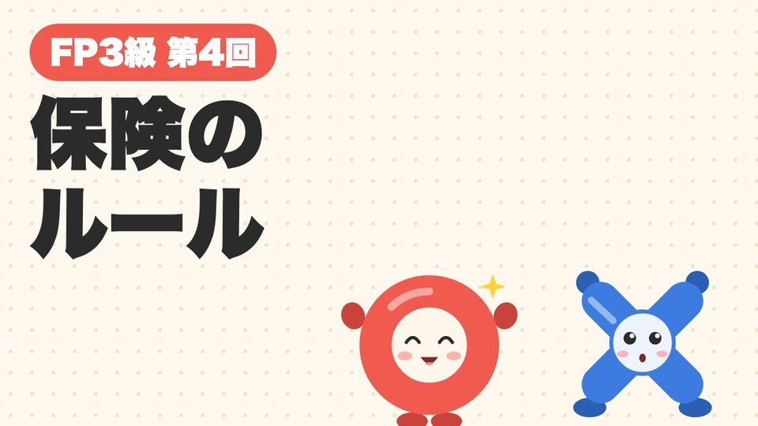
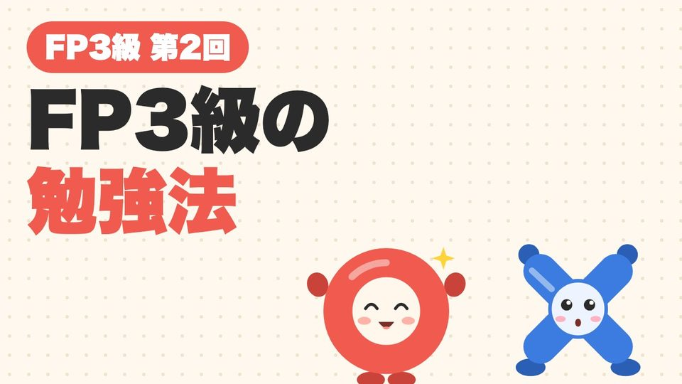
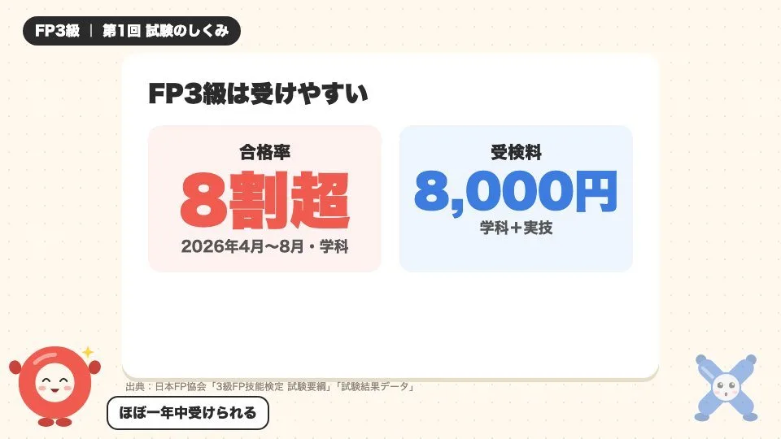

5本
 2026-11-27・勉強法・試験対策非課税は生涯1800万FP3級のNISA新制度と預金・証券の保護制度まとめ
2026-11-27・勉強法・試験対策非課税は生涯1800万FP3級のNISA新制度と預金・証券の保護制度まとめ
2026-11-26・勉強法・試験対策破綻でも地震保険100%FP3級の地震保険・自賠責保険、限度額と補償割合まとめ 2026-11-24・勉強法・試験対策社会保険と年金の基本FP3級の社会保険・年金の基本とFPの法律の境界線
2026-11-24・勉強法・試験対策社会保険と年金の基本FP3級の社会保険・年金の基本とFPの法律の境界線
2026-11-23・勉強法・試験対策持ち物は原本だけFP3級の勉強法、6分野の順番とCBT当日の持ち物
2026-11-18・試験概要・受験手続き合格率は8割超FP3級の試験のしくみ・費用・日程まとめ 合格ラインは6割